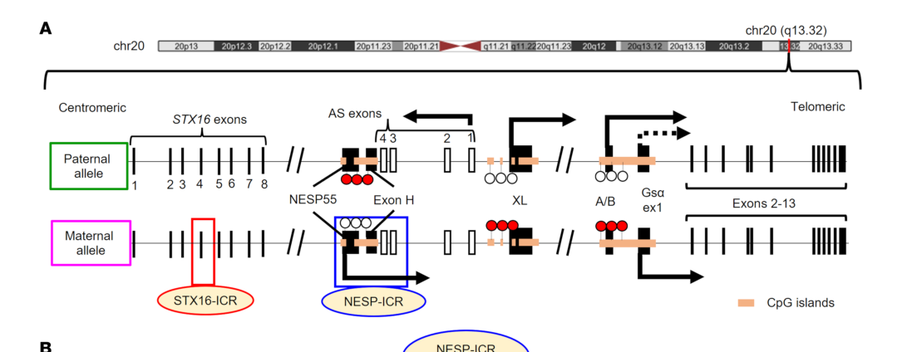

NESP55 (UniProt O95467) is a maternally expressed, chromogranin-like neuroendocrine secretory protein encoded by the complex GNAS locus. NESP55 is distinct from the canonical Gs-alpha products of the same locus; it is expressed in neuroendocrine/chromaffin lineages, processed into smaller peptides, and functions as a regulated secretory-granule precursor and marker of neuroendocrine differentiation. GNAS-locus imprinting defects involving the NESP55 region can cause endocrine disease, but those locus-level effects are distinct from direct NESP55 protein activity.
| GO Term | Evidence | Action | Reason |
|---|---|---|---|
|
GO:0005576
extracellular region
|
IEA
GO_REF:0000044 |
ACCEPT |
Summary: NESP55 is a secretory precursor, so extracellular-region annotation is plausible for processed/secreted material but is not the most specific functional compartment.
Reason: NESP55 is a secretory precursor and the extracellular-region term is a valid broad location for processed/secreted material, although secretory granule is the more specific intracellular context.
Supporting Evidence:
PMID:10729789
NESP55 open reading frame encoded a hydrophilic protein
file:human/GNAS/GNAS-uniprot.txt
May be proteolytically processed to give rise to a number of active peptides.
|
|
GO:0030133
transport vesicle
|
IEA
GO_REF:0000044 |
MODIFY |
Summary: Transport vesicle is too generic; the evidence for NESP55 points more specifically to neuroendocrine secretory granules/secretory pathway compartments.
Reason: NESP55 is chromogranin-like and shows finely granular cytoplasmic staining in pituitary adenomas, fitting secretory granule biology better than a generic transport vesicle term.
Proposed replacements:
secretory granule
Supporting Evidence:
PMID:21584660
marker of the constitutive secretory pathway
PMID:21584660
brown finely granular cytoplasmic staining
|
|
GO:0071107
response to parathyroid hormone
|
IEA
GO_REF:0000002 |
MARK AS OVER ANNOTATED |
Summary: The PTH-response evidence reflects GNAS-locus imprinting and methylation effects rather than a direct NESP55 protein activity.
Reason: PMID:22378814 shows that a deletion removing NESP55 affects imprinting and PHP1B, but this is a regulatory-locus effect. It should not be treated as a core biological process of the NESP55 protein product.
Supporting Evidence:
PMID:22378814
A novel deletion of 18,988 bp that removes NESP55
PMID:22378814
NESP55 is an additional imprinting
|
|
GO:0005886
plasma membrane
|
IDA
GO_REF:0000052 |
REMOVE |
Summary: Plasma membrane is not supported as a normal NESP55 protein location by the reviewed literature; NESP55 is a secretory/granin-like product.
Reason: The evidence points to secretory granule/cytoplasmic granular staining and secretion rather than a plasma-membrane resident role.
Supporting Evidence:
PMID:21584660
brown finely granular cytoplasmic staining
|
|
GO:0120162
positive regulation of cold-induced thermogenesis
|
ISS
PMID:20374964 TODO: Fetch title |
REMOVE |
Summary: Cold-induced thermogenesis is a Gs-alpha/adipose signaling phenotype and should not be assigned to the NESP55 protein product represented by O95467.
Reason: PMID:20374964 studies Gs-alpha deficiency in adipose tissue. That is not evidence for NESP55 acting in cold-induced thermogenesis.
Supporting Evidence:
PMID:20374964
Gsalpha plays a critical role in adipogenesis in vivo
|
|
GO:0005737
cytoplasm
|
IDA
PMID:20862257 TODO: Fetch title |
ACCEPT |
Summary: Cytoplasmic localization is supported as broad localization for NESP55-containing secretory granules and cytoplasmic immunostaining.
Reason: The term is broad but compatible with the granular cytoplasmic staining seen in pituitary adenomas and neuroendocrine/chromaffin cells.
Supporting Evidence:
PMID:21584660
brown finely granular cytoplasmic staining
|
|
GO:0005634
nucleus
|
IDA
PMID:20862257 TODO: Fetch title |
REMOVE |
Summary: Nuclear localization is not supported as a normal NESP55 location in the reviewed sources.
Reason: The main evidence supports cytoplasmic secretory granule/neuroendocrine localization, not nuclear residence.
Supporting Evidence:
PMID:20862257
NESP55 is a highly specific marker for chromaffin cell types during development
|
|
GO:0040015
negative regulation of multicellular organism growth
|
ISS
GO_REF:0000024 |
REMOVE |
Summary: Negative regulation of organism growth is a broad GNAS-locus/Gs-alpha phenotype and not a direct NESP55 function.
Reason: The NESP55 product is a chromogranin-like secretory precursor; growth phenotypes from GNAS models should not be propagated to this product without product-specific evidence.
Supporting Evidence:
file:human/GNAS/GNAS-deep-research-falcon_artifacts/artifact-00.md
NESP55 should not be conflated with canonical Gsalpha signaling protein products.
|
|
GO:0048471
perinuclear region of cytoplasm
|
IDA
PMID:21584660 Immunohistochemical expression of neuroendocrine secretory p... |
KEEP AS NON CORE |
Summary: Perinuclear cytoplasmic localization is plausible for secretory-pathway/granular staining but is not the core location term.
Reason: NESP55 is associated with neuroendocrine secretory compartments; perinuclear cytoplasm can be retained as broad localization evidence.
Supporting Evidence:
PMID:21584660
brown finely granular cytoplasmic staining
|
|
GO:0071107
response to parathyroid hormone
|
IMP
PMID:22378814 A new deletion ablating NESP55 causes loss of maternal impri... |
MARK AS OVER ANNOTATED |
Summary: The PTH-response evidence reflects GNAS-locus imprinting and methylation effects rather than a direct NESP55 protein activity.
Reason: PMID:22378814 shows that a deletion removing NESP55 affects imprinting and PHP1B, but this is a regulatory-locus effect. It should not be treated as a core biological process of the NESP55 protein product.
Supporting Evidence:
PMID:22378814
A novel deletion of 18,988 bp that removes NESP55
PMID:22378814
NESP55 is an additional imprinting
|
|
GO:0007565
female pregnancy
|
NAS
PMID:10729789 Neuroendocrine secretory protein 55 (NESP55): alternative sp... |
REMOVE |
Summary: Female pregnancy is not supported as a direct process for the NESP55 protein product.
Reason: The cited NESP55 cloning/processing paper describes a neuroendocrine secretory protein and tissue-specific splicing, not a direct pregnancy function.
Supporting Evidence:
PMID:10729789
NESP55 open reading frame encoded a hydrophilic protein
|
|
GO:0009306
protein secretion
|
NAS
PMID:10729789 Neuroendocrine secretory protein 55 (NESP55): alternative sp... |
MARK AS OVER ANNOTATED |
Summary: NESP55 is a secretory protein/cargo, but the available evidence does not show that it actively mediates protein secretion.
Reason: A secreted or processed cargo should not automatically receive a protein secretion process annotation as if it controls secretion machinery.
Supporting Evidence:
PMID:10729789
posttranslational processing of a maternally expressed protein
PMID:21584660
marker of the constitutive secretory pathway
|
Q: Which processed NESP55 peptides have reproducible physiological activity in human neuroendocrine tissues?
Q: Can GNAS annotations be separated more cleanly by product so that NESP55-specific annotations are not mixed with Gs-alpha signaling phenotypes?
Experiment: Use isoform/product-specific antibodies or tagged endogenous NESP55 to define secretory granule localization and secretion dynamics in neuroendocrine cells.
Hypothesis: NESP55 will localize to regulated secretory compartments and be secreted or processed in neuroendocrine cells.
Experiment: Profile processed NESP55 peptides by targeted mass spectrometry in pituitary, adrenal medulla, and neuroendocrine tumor samples.
Hypothesis: Product-specific peptide profiling will identify which NESP55-derived peptides are reproducibly produced in relevant tissues.
The research report should be a detailed narrative explaining the function, biological processes, and localization of the gene product. Citations should be given for all claims.
You should prioritize authoritative reviews and primary scientific literature when conducting research. You can supplement
this with annotations you find in gene/protein databases, but these can be outdated or inaccurate.
We are specifically interested in the primary function of the gene - for enzymes, what reaction is catalyzed, and what is the substrate specificity? For transporters, what is the substrate? For structural proteins or adapters, what is the broader structural role? For signaling molecules, what is the role in the pathway.
We are interested in where in or outside the cell the gene product carries out its function.
We are also interested in the signaling or biochemical pathways in which the gene functions. We are less interested in broad pleiotropic effects, except where these elucidate the precise role.
Include evidence where possible. We are interested in both experimental evidence as well as inference from structure, evolution, or bioinformatic analysis. Precise studies should be prioritized over high-throughput, where available.
The UniProt accession O95467 corresponds to Neuroendocrine secretory protein 55 (NESP55), a neuroendocrine secretory/granin-like protein produced from the human imprinted GNAS locus and distinct from the canonical stimulatory G-protein α subunit Gsα (which is encoded by different GNAS exons and functions in GPCR–cAMP signaling). (fonin2019multifunctionalityofproteins pages 15-17, yang2023gnaslocusbone pages 1-2)
A key distinction is transcript architecture and imprinting: NESP55 uses its own upstream promoter/first exon (NESP55 exon) and is expressed from the maternal allele, whereas Gsα is generally biallelic (with tissue-specific paternal silencing) and is encoded by the shared GNAS coding exons 1–13. (iwasaki2023thelongrangeinteraction pages 1-2, yang2023gnaslocusbone pages 1-2, raut2025contracttokill pages 1-3)
Recent and authoritative sources describe GNAS as a complex locus with multiple products initiated from different promoters/first exons, including Gsα, XLαs, A/B, antisense transcripts, and NESP55, each with distinct imprinting patterns. (raut2025contracttokill pages 1-3, iwasaki2023thelongrangeinteraction pages 1-2, yang2023gnaslocusbone pages 1-2, cipriano2024genotype–phenotypecorrelationof pages 1-2)
Figure evidence (locus concept): A schematic of the GNAS locus showing NESP55, Gsα, other transcripts, and differentially methylated regions (DMRs)/imprinting control regions (ICRs) is provided in Iwasaki et al. (JCI, 2023). (iwasaki2023thelongrangeinteraction media 2311e80e)
NESP55 is best understood as a chromogranin/granin-like neuroendocrine secretory precursor protein, rather than an enzyme, transporter, or canonical signal transducer such as Gsα. (bastepe2007thegnaslocus pages 13-13, bastepe2007thegnaslocus pages 1-2)
A structural feature consistent with granin-like behavior is its high predicted intrinsic disorder: one structure–function review reports NESP55 is highly intrinsically disordered (high predicted disorder fraction) and shares no sequence similarity with other GNAS isoforms, emphasizing that “GNAS” literature about Gsα cannot be assumed to apply to NESP55. (fonin2019multifunctionalityofproteins pages 15-17)
Older but authoritative review-level synthesis reports NESP55 was cloned as a novel chromogranin-like precursor and undergoes post-translational processing into peptides; one processed peptide was reported to have 5‑HT1B receptor antagonist activity. (bastepe2007thegnaslocus pages 13-13)
Interpretation (current understanding): based on available evidence, NESP55’s primary molecular role is most consistent with being a regulated secretory pathway cargo/precursor that can be processed into bioactive peptides, rather than performing a defined catalytic reaction. (bastepe2007thegnaslocus pages 13-13)
NESP55 has been reported to localize preferentially in neuroendocrine secretory cell types, including adrenal medulla adrenaline-synthesizing cells, consistent with localization to neuroendocrine secretory compartments (e.g., secretory granules) characteristic of granin-family proteins. (bastepe2007thegnaslocus pages 13-13)
NESP55 is described as a neuroendocrine-enriched product; a 2024 clinical marker paper summarizes reported presence in chromaffin cells, pituitary, and neuroendocrine tumors such as pheochromocytoma, neuroblastoma, and pancreatic neuroendocrine tumors (including insulinoma). (юкина2024поискновыхиммуногистохимических pages 2-3)
A key 2023 mechanistic study using human embryonic stem cell models identified long-range regulatory logic at GNAS:
- The NESP imprinting control region (NESP‑ICR) is required for maternal allele methylation/transcriptional silencing at the A/B region.
- The STX16‑ICR functions as a long-range enhancer of NESP55 transcription in an embryonic-stage-specific manner. (iwasaki2023thelongrangeinteraction pages 1-2)
This work reframes NESP55 not only as a secretory precursor protein, but also as a transcript whose proper expression is integral to establishing/maintaining GNAS imprinting states. (iwasaki2023thelongrangeinteraction pages 1-2)
A 2024 JCI Insight study identified recurrent small variants in the NESP55/NESPAS region in families with broad GNAS methylation defects causing pseudohypoparathyroidism type 1B, and reported that AS (antisense) transcripts were increased while NESP was decreased in cells from affected patients, supporting a mechanistic link between variants near NESP55/NESPAS and altered imprinting/transcription. (li2024recurrentsmallvariants pages 1-2)
A 2024 insulinoma-focused study (Problems of Endocrinology; n=41, with extended IHC in n=10) evaluated multiple candidate circulating and tissue markers, including NESP55. It reported that circulating marker levels overall did not change significantly post-surgery and that marker expression did not correlate with aggressiveness; the authors concluded that NESP55 was not supported as a promising marker in their dataset. (юкина2024поискновыхиммуногистохимических pages 1-2)
In contrast, the same 2024 paper cites a prior study reporting NESP55 immunoreactivity in 90.9% of P‑NETs, illustrating that NESP55 may show high IHC positivity in some P‑NET cohorts but may not generalize as a clinically useful circulating/tissue marker for insulinoma aggressiveness in all settings. (юкина2024поискновыхиммуногистохимических pages 2-3, юкина2024поискновыхиммуногистохимических pages 1-2)
Although much of clinical GNAS genetics focuses on Gsα, recent human studies implicate the NESP55-region imprinting machinery in disease mechanisms (e.g., pseudohypoparathyroidism type 1B through methylation defects involving DMRs connected to NESP). (iwasaki2023thelongrangeinteraction pages 1-2, li2024recurrentsmallvariants pages 1-2)
Across recent literature, the dominant 2023–2024 advances relevant to NESP55 are regulatory (imprinting control elements, enhancer logic, and disease-associated methylation/transcriptional shifts) rather than new protein biochemistry. (iwasaki2023thelongrangeinteraction pages 1-2, li2024recurrentsmallvariants pages 1-2)
Direct, modern (2023–2024) experimental evidence in the retrieved set remains limited regarding:
- precise human subcellular localization at high resolution,
- proteolytic processing sites/peptide repertoire in humans,
- validated receptor targets and mechanisms for NESP55-derived peptides.
Accordingly, the most defensible functional annotation from the current evidence is that NESP55 is a maternally expressed, granin-like secretory precursor whose transcriptional regulation is embedded within the GNAS imprinting network. (bastepe2007thegnaslocus pages 13-13, iwasaki2023thelongrangeinteraction pages 1-2)
| Aspect | Key points | Evidence & notes (paper, year) | Citation ID |
|---|---|---|---|
| Identity / exon structure / imprinting | UniProt O95467 corresponds to NESP55, a distinct protein product of the human GNAS locus rather than Gsα. It is produced from its own upstream promoter/first exon and is maternally expressed because the NESP promoter/DMR is methylated on the paternal allele. | Explicitly identified as “NESP55 (UniProt ID: O95467)” and described as transcriptionally/structurally distinct from Gsα; multiple GNAS reviews and primary studies state NESP55 is a separate imprinted GNAS product with maternal expression (Fonin et al., 2019; Iwasaki et al., 2023; Yang et al., 2023; Cipriano et al., 2024). | (fonin2019multifunctionalityofproteins pages 15-17, iwasaki2023thelongrangeinteraction pages 1-2, yang2023gnaslocusbone pages 1-2, cipriano2024genotype–phenotypecorrelationof pages 1-2) |
| Identity / exon structure / imprinting | The GNAS locus is complex and produces multiple products (Gsα, XLαs, A/B, antisense transcripts, NESP55). NESP55 should not be conflated with canonical Gsα signaling protein products. | Recent reviews and mechanistic studies emphasize distinct promoters/first exons and different imprinting patterns across GNAS products; Figure 1A in Iwasaki et al. schematizes NESP55 separately from Gsα and other transcripts (Iwasaki et al., 2023). | (raut2025contracttokill pages 1-3, iwasaki2023thelongrangeinteraction pages 1-2, yang2023gnaslocusbone pages 1-2, iwasaki2023thelongrangeinteraction media 2311e80e) |
| Biochemical nature & processing | NESP55 is a chromogranin-like/neuroendocrine secretory precursor rather than an enzyme or transporter. It undergoes post-translational processing to smaller peptides. | Review summarizing foundational cloning/biochemistry describes NESP55 as a “novel chromogranin-like precursor” that is post-translationally processed into peptides; one processed peptide was reported to have 5-HT1B antagonist activity (Bastepe, 2007, citing earlier primary work). | (bastepe2007thegnaslocus pages 13-13) |
| Biochemical nature & processing | NESP55 is highly intrinsically disordered relative to Gsα isoforms, consistent with granin/secretory precursor behavior. | Structure-function review reports NESP55 has high predicted disorder (~86.5% PDR) and no sequence similarity to other GNAS isoforms, reinforcing that it is biochemically distinct from G protein α-subunits (Fonin et al., 2019). | (fonin2019multifunctionalityofproteins pages 15-17) |
| Localization | NESP55 localizes to neuroendocrine secretory compartments and is associated with chromogranin-like granules/regulated secretion rather than plasma membrane signal transduction. | Bastepe review summarizes localization studies showing preferential localization in adrenaline-synthesizing cells of bovine and rat adrenal medulla, consistent with secretory granules and a neuroendocrine secretory role (Bastepe, 2007). | (bastepe2007thegnaslocus pages 13-13) |
| Expression / tissues | NESP55 is a neuroendocrine-enriched product; reported in adrenal medulla/chromaffin cells and other neuroendocrine tissues/tumors. | Review and biomarker literature note presence in chromaffin cells, pituitary, pheochromocytoma tissue, neuroblastomas, insulinomas, and other pancreatic neuroendocrine tumors; older tissue-distribution work in bovine tissues is summarized by Bastepe (2007), and Yukina et al. (2024) reiterate neuroendocrine distribution. | (bastepe2007thegnaslocus pages 13-13, юкина2024поискновыхиммуногистохимических pages 2-3) |
| Physiology / functional inference | NESP55 is not assigned a canonical catalytic reaction; current understanding supports a role as a regulated secretory-granule precursor within neuroendocrine cells. | The available evidence supports precursor/secretory function and peptide generation, while recent GNAS-locus papers focus mainly on imprinting control rather than direct molecular mechanism of NESP55 action (Bastepe, 2007; Iwasaki et al., 2023; Li et al., 2024). | (bastepe2007thegnaslocus pages 13-13, iwasaki2023thelongrangeinteraction pages 1-2, li2024recurrentsmallvariants pages 1-2) |
| Disease / clinical relevance | NESP55 transcript regulation matters clinically through GNAS imprinting disorders: reduced NESP expression and altered antisense transcription are implicated in pseudohypoparathyroidism type 1B with broad GNAS methylation defects. | Li et al. (2024) identified recurrent small variants in the NESP55/NESPAS region in affected families and observed increased antisense transcripts with decreased NESP expression in patient cells, linking NESP55-region disruption to PHP1B pathogenesis. | (li2024recurrentsmallvariants pages 1-2) |
| Disease / clinical relevance | NESP55 has been explored as a neuroendocrine tumor marker, but evidence is mixed and context-dependent. | Yukina et al. (2024) note a prior study reporting NESP55 immunoreactivity in 90.9% of pancreatic neuroendocrine tumors, but in their own insulinoma cohort NESP55 was not supported as a promising tissue/circulating marker. | (юкина2024поискновыхиммуногистохимических pages 2-3, юкина2024поискновыхиммуногистохимических pages 1-2) |
| Disease / clinical relevance | In a 2024 insulinoma study, NESP55 did not show convincing value for association with insulin-producing tumors or aggressiveness. | Cohort size was 41 patients, with extended IHC in 10; marker levels before surgery and 2–12 months after surgery did not change significantly overall, and NESP55 was among markers not supported for further study in insulinoma (Yukina et al., 2024). | (юкина2024поискновыхиммуногистохимических pages 1-2) |
| Recent 2023–2024 developments | Major recent advances concern the regulatory biology of the NESP55 region within GNAS imprinting rather than new protein-level biochemistry. | Iwasaki et al. (2023) showed the STX16-ICR acts as a long-range enhancer of maternal NESP55 transcription and that the NESP-ICR is required for A/B methylation/silencing; Li et al. (2024) connected recurrent NESP55/NESPAS-region variants to broad GNAS methylation defects in PHP1B. | (iwasaki2023thelongrangeinteraction pages 1-2, li2024recurrentsmallvariants pages 1-2) |
Table: This table summarizes evidence-backed functional annotation for human NESP55 (GNAS; UniProt O95467), including identity, processing, localization, expression, and clinical relevance. It emphasizes what is directly supported by the retrieved literature, especially 2023-2024 studies on GNAS imprinting and biomarker use.
References
(fonin2019multifunctionalityofproteins pages 15-17): Alexander V. Fonin, April L. Darling, Irina M. Kuznetsova, Konstantin K. Turoverov, and Vladimir N. Uversky. Multi-functionality of proteins involved in gpcr and g protein signaling: making sense of structure–function continuum with intrinsic disorder-based proteoforms. Cellular and Molecular Life Sciences, 76:4461-4492, Aug 2019. URL: https://doi.org/10.1007/s00018-019-03276-1, doi:10.1007/s00018-019-03276-1. This article has 78 citations and is from a domain leading peer-reviewed journal.
(yang2023gnaslocusbone pages 1-2): Wan Yang, Yiyi Zuo, Nuo Zhang, Kangning Wang, Runze Zhang, Ziyi Chen, and Qing He. Gnas locus: bone related diseases and mouse models. Frontiers in Endocrinology, Oct 2023. URL: https://doi.org/10.3389/fendo.2023.1255864, doi:10.3389/fendo.2023.1255864. This article has 19 citations.
(iwasaki2023thelongrangeinteraction pages 1-2): Yorihiro Iwasaki, Cagri Aksu, Monica Reyes, Birol Ay, Qing He, and Murat Bastepe. The long-range interaction between two gnas imprinting control regions delineates pseudohypoparathyroidism type 1b pathogenesis. Journal of Clinical Investigation, Apr 2023. URL: https://doi.org/10.1172/jci167953, doi:10.1172/jci167953. This article has 25 citations and is from a highest quality peer-reviewed journal.
(raut2025contracttokill pages 1-3): Pratima Raut, Poompozhil Mathivanan, Surinder K. Batra, and Moorthy P. Ponnusamy. Contract to kill: gnas mutation. Molecular Cancer, Mar 2025. URL: https://doi.org/10.1186/s12943-025-02247-4, doi:10.1186/s12943-025-02247-4. This article has 5 citations and is from a highest quality peer-reviewed journal.
(cipriano2024genotype–phenotypecorrelationof pages 1-2): Lorenzo Cipriano, Rosario Ferrigno, Immacolata Andolfo, Roberta Russo, Daniela Cioffi, Maria Cristina Savanelli, Valeria Pellino, Antonella Klain, Achille Iolascon, and Carmelo Piscopo. Genotype–phenotype correlation of gnas gene: review and disease management of a hotspot mutation. International Journal of Molecular Sciences, 25:10913, Oct 2024. URL: https://doi.org/10.3390/ijms252010913, doi:10.3390/ijms252010913. This article has 1 citations.
(iwasaki2023thelongrangeinteraction media 2311e80e): Yorihiro Iwasaki, Cagri Aksu, Monica Reyes, Birol Ay, Qing He, and Murat Bastepe. The long-range interaction between two gnas imprinting control regions delineates pseudohypoparathyroidism type 1b pathogenesis. Journal of Clinical Investigation, Apr 2023. URL: https://doi.org/10.1172/jci167953, doi:10.1172/jci167953. This article has 25 citations and is from a highest quality peer-reviewed journal.
(bastepe2007thegnaslocus pages 13-13): Murat Bastepe. The gnas locus: quintessential complex gene encoding gsα, xlαs, and other imprinted transcripts. Current Genomics, 8:398-414, Sep 2007. URL: https://doi.org/10.2174/138920207783406488, doi:10.2174/138920207783406488. This article has 82 citations and is from a peer-reviewed journal.
(bastepe2007thegnaslocus pages 1-2): Murat Bastepe. The gnas locus: quintessential complex gene encoding gsα, xlαs, and other imprinted transcripts. Current Genomics, 8:398-414, Sep 2007. URL: https://doi.org/10.2174/138920207783406488, doi:10.2174/138920207783406488. This article has 82 citations and is from a peer-reviewed journal.
(юкина2024поискновыхиммуногистохимических pages 2-3): © М.Ю. Юкина, Е. А. Трошина, Л.С. Урусова, Нурана Фейзуллаевна Нуралиева, Лариса Вячеславовна Никанкина, В.А. Иоутси, О. Ю. Реброва, Н. Г. Мокрышева, M. Y. Yukina, E. Troshina, L. Urusova, N. Nuralieva, L. V. Nikankina, V. A. Ioutsi, O. Rebrova, and N. G. Mokrysheva. Поиск новых иммуногистохимических и циркулирующих маркеров инсулиномы. Problems of Endocrinology, 70:15-26, May 2024. URL: https://doi.org/10.14341/probl13466, doi:10.14341/probl13466. This article has 1 citations.
(li2024recurrentsmallvariants pages 1-2): Dong Li, Suzanne Jan de Beur, Cuiping Hou, Maura R.Z. Ruzhnikov, Hilary Seeley, Garry R. Cutting, Molly B. Sheridan, and Michael A. Levine. Recurrent small variants in nesp55/nespas associated with broad gnas methylation defects and pseudohypoparathyroidism type 1b. JCI Insight, Dec 2024. URL: https://doi.org/10.1172/jci.insight.185874, doi:10.1172/jci.insight.185874. This article has 4 citations and is from a domain leading peer-reviewed journal.
(юкина2024поискновыхиммуногистохимических pages 1-2): © М.Ю. Юкина, Е. А. Трошина, Л.С. Урусова, Нурана Фейзуллаевна Нуралиева, Лариса Вячеславовна Никанкина, В.А. Иоутси, О. Ю. Реброва, Н. Г. Мокрышева, M. Y. Yukina, E. Troshina, L. Urusova, N. Nuralieva, L. V. Nikankina, V. A. Ioutsi, O. Rebrova, and N. G. Mokrysheva. Поиск новых иммуногистохимических и циркулирующих маркеров инсулиномы. Problems of Endocrinology, 70:15-26, May 2024. URL: https://doi.org/10.14341/probl13466, doi:10.14341/probl13466. This article has 1 citations.
(yang2023gnaslocusbone pages 12-13): Wan Yang, Yiyi Zuo, Nuo Zhang, Kangning Wang, Runze Zhang, Ziyi Chen, and Qing He. Gnas locus: bone related diseases and mouse models. Frontiers in Endocrinology, Oct 2023. URL: https://doi.org/10.3389/fendo.2023.1255864, doi:10.3389/fendo.2023.1255864. This article has 19 citations.

PITA context: The MONDO issue references GNAS for PITA3, but this local review is for UniProt O95467, the NESP55 product of the complex GNAS locus. This matters because many GNAS biological phenotypes belong to canonical Gs-alpha products or locus-level imprinting rather than direct NESP55 protein function.
Deep research status: Falcon deep research succeeded for GNAS and produced GNAS-deep-research-falcon.md plus an artifact table. The artifact explicitly warned that "NESP55 should not be conflated with canonical Gsalpha signaling protein products" [file:human/GNAS/GNAS-deep-research-falcon_artifacts/artifact-00.md "NESP55 should not be conflated with canonical Gsalpha signaling protein products"].
Functional summary: NESP55 is a chromogranin-like neuroendocrine secretory product. The cloning/processing paper found that the "NESP55 open reading frame encoded a hydrophilic protein" and characterized "posttranslational processing of a maternally expressed protein" [PMID:10729789 "NESP55 open reading frame encoded a hydrophilic protein"; PMID:10729789 "posttranslational processing of a maternally expressed protein"]. Pituitary adenoma IHC describes NESP55 as a "marker of the constitutive secretory pathway" with "brown finely granular cytoplasmic staining" [PMID:21584660 "marker of the constitutive secretory pathway"; PMID:21584660 "brown finely granular cytoplasmic staining"].
Annotation decisions: I kept cytoplasmic/secretory-context annotations, modified generic transport vesicle to secretory granule, and removed or over-annotation-marked Gs-alpha/locus-level phenotypes such as thermogenesis, organism growth, PTH response, and pregnancy. The PTH paper shows a deletion "that removes NESP55" and supports NESP55 as an "additional imprinting control element" [PMID:22378814 "A novel deletion of 18,988 bp that removes NESP55"; PMID:22378814 "NESP55 is an additional imprinting control element"], but that is not direct NESP55 protein activity.
id: O95467
gene_symbol: GNAS
product_type: PROTEIN
status: COMPLETE
taxon:
id: NCBITaxon:9606
label: Homo sapiens
description: NESP55 (UniProt O95467) is a maternally expressed, chromogranin-like neuroendocrine
secretory protein encoded by the complex GNAS locus. NESP55 is distinct from the canonical
Gs-alpha products of the same locus; it is expressed in neuroendocrine/chromaffin lineages,
processed into smaller peptides, and functions as a regulated secretory-granule precursor and
marker of neuroendocrine differentiation. GNAS-locus imprinting defects involving the NESP55
region can cause endocrine disease, but those locus-level effects are distinct from direct
NESP55 protein activity.
alternative_products:
- name: Nesp55 {ECO:0000269|PubMed:10729789, ECO:0000269|PubMed:10749992,
id: O95467-1
- name: XLas-1
id: Q5JWF2-1
sequence_note: External
- name: XLas-2
id: Q5JWF2-2
sequence_note: External
- name: XLas-3
id: Q5JWF2-3
sequence_note: External
- name: Gnas-1 {ECO:0000305} (Alpha-S2 {ECO:0000305}, GNASl)
id: P63092-1, P04895-1
sequence_note: External
- name: Gnas-2 {ECO:0000305} (Alpha-S1 {ECO:0000305}, GNASs)
id: P63092-2, P04895-2
sequence_note: External
- name: '3'
id: P63092-3
sequence_note: External
- name: '4'
id: P63092-4
sequence_note: External
existing_annotations:
- term:
id: GO:0005576
label: extracellular region
evidence_type: IEA
original_reference_id: GO_REF:0000044
qualifier: located_in
review:
summary: NESP55 is a secretory precursor, so extracellular-region annotation is plausible
for processed/secreted material but is not the most specific functional compartment.
action: ACCEPT
reason: NESP55 is a secretory precursor and the extracellular-region term is a valid broad
location for processed/secreted material, although secretory granule is the more specific
intracellular context.
supported_by:
- reference_id: PMID:10729789
supporting_text: NESP55 open reading frame encoded a hydrophilic protein
- reference_id: file:human/GNAS/GNAS-uniprot.txt
supporting_text: May be proteolytically processed to give rise to a number of active peptides.
- term:
id: GO:0030133
label: transport vesicle
evidence_type: IEA
original_reference_id: GO_REF:0000044
qualifier: located_in
review:
summary: Transport vesicle is too generic; the evidence for NESP55 points more specifically
to neuroendocrine secretory granules/secretory pathway compartments.
action: MODIFY
reason: NESP55 is chromogranin-like and shows finely granular cytoplasmic staining in pituitary
adenomas, fitting secretory granule biology better than a generic transport vesicle term.
proposed_replacement_terms:
- id: GO:0030141
label: secretory granule
supported_by:
- reference_id: PMID:21584660
supporting_text: marker of the constitutive secretory pathway
- reference_id: PMID:21584660
supporting_text: brown finely granular cytoplasmic staining
- term:
id: GO:0071107
label: response to parathyroid hormone
evidence_type: IEA
original_reference_id: GO_REF:0000002
qualifier: involved_in
review:
summary: The PTH-response evidence reflects GNAS-locus imprinting and methylation effects
rather than a direct NESP55 protein activity.
action: MARK_AS_OVER_ANNOTATED
reason: PMID:22378814 shows that a deletion removing NESP55 affects imprinting and PHP1B,
but this is a regulatory-locus effect. It should not be treated as a core biological process
of the NESP55 protein product.
supported_by:
- reference_id: PMID:22378814
supporting_text: A novel deletion of 18,988 bp that removes NESP55
- reference_id: PMID:22378814
supporting_text: NESP55 is an additional imprinting
- term:
id: GO:0005886
label: plasma membrane
evidence_type: IDA
original_reference_id: GO_REF:0000052
qualifier: located_in
review:
summary: Plasma membrane is not supported as a normal NESP55 protein location by the reviewed
literature; NESP55 is a secretory/granin-like product.
action: REMOVE
reason: The evidence points to secretory granule/cytoplasmic granular staining and secretion
rather than a plasma-membrane resident role.
supported_by:
- reference_id: PMID:21584660
supporting_text: brown finely granular cytoplasmic staining
- term:
id: GO:0120162
label: positive regulation of cold-induced thermogenesis
evidence_type: ISS
original_reference_id: PMID:20374964
qualifier: involved_in
review:
summary: Cold-induced thermogenesis is a Gs-alpha/adipose signaling phenotype and should not
be assigned to the NESP55 protein product represented by O95467.
action: REMOVE
reason: PMID:20374964 studies Gs-alpha deficiency in adipose tissue. That is not evidence
for NESP55 acting in cold-induced thermogenesis.
supported_by:
- reference_id: PMID:20374964
supporting_text: Gsalpha plays a critical role in adipogenesis in vivo
- term:
id: GO:0005737
label: cytoplasm
evidence_type: IDA
original_reference_id: PMID:20862257
qualifier: located_in
review:
summary: Cytoplasmic localization is supported as broad localization for NESP55-containing
secretory granules and cytoplasmic immunostaining.
action: ACCEPT
reason: The term is broad but compatible with the granular cytoplasmic staining seen in pituitary
adenomas and neuroendocrine/chromaffin cells.
supported_by:
- reference_id: PMID:21584660
supporting_text: brown finely granular cytoplasmic staining
- term:
id: GO:0005634
label: nucleus
evidence_type: IDA
original_reference_id: PMID:20862257
qualifier: located_in
review:
summary: Nuclear localization is not supported as a normal NESP55 location in the reviewed
sources.
action: REMOVE
reason: The main evidence supports cytoplasmic secretory granule/neuroendocrine localization,
not nuclear residence.
supported_by:
- reference_id: PMID:20862257
supporting_text: NESP55 is a highly specific marker for chromaffin cell types during development
- term:
id: GO:0040015
label: negative regulation of multicellular organism growth
evidence_type: ISS
original_reference_id: GO_REF:0000024
qualifier: involved_in
review:
summary: Negative regulation of organism growth is a broad GNAS-locus/Gs-alpha phenotype and
not a direct NESP55 function.
action: REMOVE
reason: The NESP55 product is a chromogranin-like secretory precursor; growth phenotypes from
GNAS models should not be propagated to this product without product-specific evidence.
supported_by:
- reference_id: file:human/GNAS/GNAS-deep-research-falcon_artifacts/artifact-00.md
supporting_text: NESP55 should not be conflated with canonical Gsalpha signaling protein
products.
- term:
id: GO:0048471
label: perinuclear region of cytoplasm
evidence_type: IDA
original_reference_id: PMID:21584660
qualifier: located_in
review:
summary: Perinuclear cytoplasmic localization is plausible for secretory-pathway/granular
staining but is not the core location term.
action: KEEP_AS_NON_CORE
reason: NESP55 is associated with neuroendocrine secretory compartments; perinuclear cytoplasm
can be retained as broad localization evidence.
supported_by:
- reference_id: PMID:21584660
supporting_text: brown finely granular cytoplasmic staining
- term:
id: GO:0071107
label: response to parathyroid hormone
evidence_type: IMP
original_reference_id: PMID:22378814
qualifier: involved_in
review:
summary: The PTH-response evidence reflects GNAS-locus imprinting and methylation effects
rather than a direct NESP55 protein activity.
action: MARK_AS_OVER_ANNOTATED
reason: PMID:22378814 shows that a deletion removing NESP55 affects imprinting and PHP1B,
but this is a regulatory-locus effect. It should not be treated as a core biological process
of the NESP55 protein product.
supported_by:
- reference_id: PMID:22378814
supporting_text: A novel deletion of 18,988 bp that removes NESP55
- reference_id: PMID:22378814
supporting_text: NESP55 is an additional imprinting
- term:
id: GO:0007565
label: female pregnancy
evidence_type: NAS
original_reference_id: PMID:10729789
qualifier: involved_in
review:
summary: Female pregnancy is not supported as a direct process for the NESP55 protein product.
action: REMOVE
reason: The cited NESP55 cloning/processing paper describes a neuroendocrine secretory protein
and tissue-specific splicing, not a direct pregnancy function.
supported_by:
- reference_id: PMID:10729789
supporting_text: NESP55 open reading frame encoded a hydrophilic protein
- term:
id: GO:0009306
label: protein secretion
evidence_type: NAS
original_reference_id: PMID:10729789
qualifier: involved_in
review:
summary: NESP55 is a secretory protein/cargo, but the available evidence does not show that
it actively mediates protein secretion.
action: MARK_AS_OVER_ANNOTATED
reason: A secreted or processed cargo should not automatically receive a protein secretion
process annotation as if it controls secretion machinery.
supported_by:
- reference_id: PMID:10729789
supporting_text: posttranslational processing of a maternally expressed protein
- reference_id: PMID:21584660
supporting_text: marker of the constitutive secretory pathway
references:
- id: GO_REF:0000002
title: Gene Ontology annotation through association of InterPro records with GO terms
findings: []
- id: GO_REF:0000024
title: Manual transfer of experimentally-verified manual GO annotation data to orthologs by
curator judgment of sequence similarity
findings: []
- id: GO_REF:0000044
title: Gene Ontology annotation based on UniProtKB/Swiss-Prot Subcellular Location vocabulary
mapping, accompanied by conservative changes to GO terms applied by UniProt
findings: []
- id: GO_REF:0000052
title: Gene Ontology annotation based on curation of immunofluorescence data
findings: []
- id: PMID:10729789
title: 'Neuroendocrine secretory protein 55 (NESP55): alternative splicing onto transcripts
of the GNAS gene and posttranslational processing of a maternally expressed protein.'
findings: []
- id: PMID:20374964
title: 'TODO: Fetch title'
findings: []
- id: PMID:20862257
title: 'TODO: Fetch title'
findings: []
- id: PMID:21584660
title: Immunohistochemical expression of neuroendocrine secretory protein-55 (NESP-55) in pituitary
adenomas.
findings: []
- id: PMID:22378814
title: A new deletion ablating NESP55 causes loss of maternal imprint of A/B GNAS and autosomal
dominant pseudohypoparathyroidism type Ib.
findings: []
- id: file:human/GNAS/GNAS-uniprot.txt
title: UniProt record for GNAS/NESP55
findings: []
- id: file:human/GNAS/GNAS-deep-research-falcon_artifacts/artifact-00.md
title: Falcon deep research artifact for GNAS/NESP55
findings: []
core_functions:
- description: NESP55 acts as a chromogranin-like neuroendocrine secretory precursor in chromaffin/neuroendocrine
cells, undergoing post-translational processing and marking secretory-granule differentiation
rather than catalyzing a defined biochemical reaction.
locations:
- id: GO:0030141
label: secretory granule
- id: GO:0005576
label: extracellular region
supported_by:
- reference_id: PMID:10729789
supporting_text: NESP55 open reading frame encoded a hydrophilic protein
- reference_id: PMID:10729789
supporting_text: posttranslational processing of a maternally expressed protein
- reference_id: PMID:21584660
supporting_text: marker of the constitutive secretory pathway
- reference_id: PMID:20862257
supporting_text: NESP55 is a highly specific marker for chromaffin cell types during development
proposed_new_terms: []
suggested_questions:
- question: Which processed NESP55 peptides have reproducible physiological activity in human
neuroendocrine tissues?
- question: Can GNAS annotations be separated more cleanly by product so that NESP55-specific
annotations are not mixed with Gs-alpha signaling phenotypes?
suggested_experiments:
- description: Use isoform/product-specific antibodies or tagged endogenous NESP55 to define secretory
granule localization and secretion dynamics in neuroendocrine cells.
hypothesis: NESP55 will localize to regulated secretory compartments and be secreted or processed
in neuroendocrine cells.
- description: Profile processed NESP55 peptides by targeted mass spectrometry in pituitary, adrenal
medulla, and neuroendocrine tumor samples.
hypothesis: Product-specific peptide profiling will identify which NESP55-derived peptides are
reproducibly produced in relevant tissues.
{kind=link}